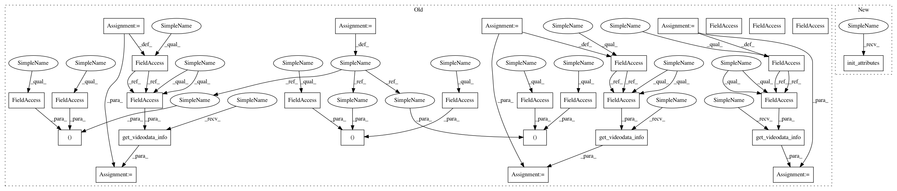

3cbeab42c246425425c584cd53f1cc25d8c738a7,torchreid/datasets/mars.py,Mars,__init__,#Mars#Any#Any#Any#,36
Before Change
if verbose:
self.print_dataset_statistics(train, query, gallery)
self.train = train
self.query = query
self.gallery = gallery
self.num_train_pids, _, self.num_train_cams = self.get_videodata_info(self.train)
self.num_query_pids, _, self.num_query_cams = self.get_videodata_info(self.query)
self.num_gallery_pids, _, self.num_gallery_cams = self.get_videodata_info(self.gallery)
def get_names(self, fpath):
names = []
with open(fpath, "r") as f:
After Change
query = self.process_data(test_names, track_query, home_dir="bbox_test", relabel=False, min_seq_len=min_seq_len)
gallery = self.process_data(test_names, track_gallery, home_dir="bbox_test", relabel=False, min_seq_len=min_seq_len)
self.init_attributes(train, query, gallery)
if verbose:
self.print_dataset_statistics(train, query, gallery)
In pattern: SUPERPATTERN
Frequency: 4
Non-data size: 29
Instances
Project Name: KaiyangZhou/deep-person-reid
Commit Name: 3cbeab42c246425425c584cd53f1cc25d8c738a7
Time: 2019-03-15
Author: k.zhou@qmul.ac.uk
File Name: torchreid/datasets/mars.py
Class Name: Mars
Method Name: __init__
Project Name: KaiyangZhou/deep-person-reid
Commit Name: 3cbeab42c246425425c584cd53f1cc25d8c738a7
Time: 2019-03-15
Author: k.zhou@qmul.ac.uk
File Name: torchreid/datasets/ilidsvid.py
Class Name: iLIDSVID
Method Name: __init__
Project Name: KaiyangZhou/deep-person-reid
Commit Name: 3cbeab42c246425425c584cd53f1cc25d8c738a7
Time: 2019-03-15
Author: k.zhou@qmul.ac.uk
File Name: torchreid/datasets/mars.py
Class Name: Mars
Method Name: __init__
Project Name: KaiyangZhou/deep-person-reid
Commit Name: 3cbeab42c246425425c584cd53f1cc25d8c738a7
Time: 2019-03-15
Author: k.zhou@qmul.ac.uk
File Name: torchreid/datasets/dukemtmcvidreid.py
Class Name: DukeMTMCVidReID
Method Name: __init__
Project Name: KaiyangZhou/deep-person-reid
Commit Name: 3cbeab42c246425425c584cd53f1cc25d8c738a7
Time: 2019-03-15
Author: k.zhou@qmul.ac.uk
File Name: torchreid/datasets/prid2011.py
Class Name: PRID2011
Method Name: __init__